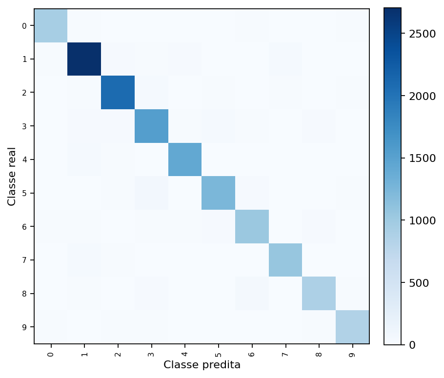
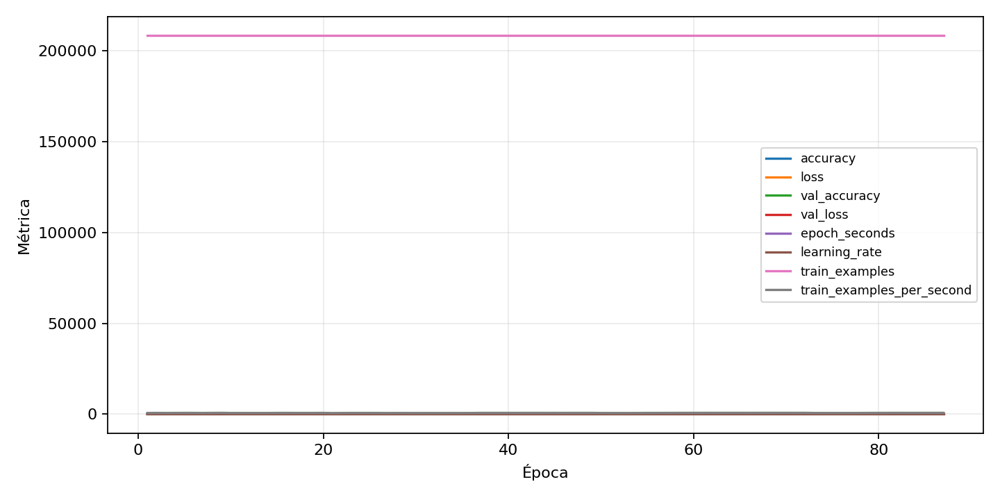

| n_samples | 14893 |
|---|---|
| loss | 0.25722381472587585 |
| accuracy | 0.9244611562479017 |
| balanced_accuracy | 0.9188691572458769 |
| macro_f1 | 0.9200966908405486 |


| Índice | Classe | Suporte | Precisão | Recall | F1 |
|---|---|---|---|---|---|
| 0 | 0 | 1004 | 0.93812375249501 | 0.9362549800796812 | 0.9371884346959123 |
| 1 | 1 | 2844 | 0.9428770463253222 | 0.9518284106891702 | 0.947331583552056 |
| 2 | 2 | 2210 | 0.9397210976158344 | 0.9452488687782805 | 0.942476877960749 |
| 3 | 3 | 1707 | 0.8896591565569035 | 0.9021675454012889 | 0.89586969168121 |
| 4 | 4 | 1497 | 0.9365499008592201 | 0.9465597862391449 | 0.9415282392026578 |
| 5 | 5 | 1390 | 0.9221645663454411 | 0.8949640287769784 | 0.9083607155896313 |
| 6 | 6 | 1155 | 0.8985255854293148 | 0.896969696969697 | 0.8977469670710573 |
| 7 | 7 | 1142 | 0.9240174672489083 | 0.9264448336252189 | 0.925229558373415 |
| 8 | 8 | 1006 | 0.9083419155509783 | 0.8767395626242545 | 0.8922610015174507 |
| 9 | 9 | 938 | 0.9144385026737968 | 0.9115138592750534 | 0.9129738387613455 |
{"adapter":"svhn","balance_mode":"all_raw","class_names":["0","1","2","3","4","5","6","7","8","9"],"dataset":"svhn","dataset_options":{},"dataset_root":"/home/msduda/datasets-tcc/svhn","native_channels":3,"normalization":"zscore","num_classes":10,"protocol":{"checkpoint_monitor":"val_macro_f1","dtype_policy":"mixed_float16","early_stopping":{"patience":10,"restore_best_weights":true},"evaluation_augmentation":false,"input_channels":"native","optimizer":"Adam","pretrained_weights":false,"reduce_lr_on_plateau":{"factor":0.3,"min_lr":1e-07,"patience":4},"resize":"proportional_padding","test_time_augmentation":false,"training_from_scratch":true},"seed":42,"source_fingerprint":"7db49be5026c8b7da2f91e322de4245a9678833ee2ae7cd8c1a5feac9c0da7c3","source_manifest":{"class_names":["0","1","2","3","4","5","6","7","8","9"],"joined_samples":99289,"metadata":{"include_extra":false,"layout":"svhn-mat"},"name":"svhn","native_channels":3,"source_path":"/home/msduda/datasets-tcc/svhn","splits":{"test":26032,"train":73257},"target_size":64},"target_size":64,"test_fraction":0.15,"train_fraction":0.7,"training":{"augmentation":{"brightness_delta":0.03,"contrast_lower":0.92,"contrast_upper":1.08,"cutout_max_frac":0.08,"cutout_prob":0.25,"flip_lr":true,"noise_std":0.005,"translate_frac":0.05,"zoom_max":1.04,"zoom_min":0.96},"batch_size":512,"default_image_size":64,"dtype_policy":"mixed_float16","early_stopping_patience":10,"extra_fraction":2.0,"image_size_overrides":{"gtsrb":128},"keras_verbose":1,"learning_rate":0.0003,"max_epochs":100,"preprocess_cache_max_mib":2048,"reduce_lr_factor":0.3,"reduce_lr_min_lr":1e-07,"reduce_lr_patience":4,"shuffle_buffer_max_mib":1024},"validation_fraction":0.15}
{"epochs_completed":87,"epochs_recorded":87,"evaluation_seconds":19.818798997999693,"fit_seconds_current_attempt":28323.846592295,"max_epoch_seconds":377.1152641230001,"max_epochs":100,"mean_epoch_seconds":321.5578683332874,"mean_train_examples_per_second":650.396773375173,"median_train_examples_per_second":659.4966584424419,"min_epoch_seconds":294.5818692089997,"selected_checkpoint":"/mnt/c/source/repos/teste-modelos-tcc/outputs/remaining-ram-capped/svhn/runs/svhn__zscore__all_raw__seed-42/checkpoints/best.keras","total_seconds":27975.534544996,"training_seconds":27975.534544996,"wall_seconds_current_attempt":28363.974592554}
{"elapsed_seconds":28364.090588257,"event_counts":{"data_preparation_end":1,"data_preparation_start":1,"epoch_end":87,"evaluation_end":1,"evaluation_start":1,"fit_end":1,"fit_start":1,"periodic":5602,"run_completed":1,"train_start":1},"generated_at":"2026-07-31T12:19:48.117+00:00","gpu_backend":"pynvml","interval_seconds":5.0,"metrics":{"cpu_percent":{"count":5697,"max":42.6,"mean":12.565876777251185,"min":0.0,"p50":12.5,"p95":13.8},"disk_data_free_bytes":{"count":5697,"max":998225494016.0,"mean":998224561346.6625,"min":998223273984.0,"p50":998225321984.0,"p95":998225330176.0},"disk_data_percent":{"count":5697,"max":2.7,"mean":2.7,"min":2.7,"p50":2.7,"p95":2.7},"disk_data_total_bytes":{"count":5697,"max":1081101176832.0,"mean":1081101176832.0,"min":1081101176832.0,"p50":1081101176832.0,"p95":1081101176832.0},"disk_data_used_bytes":{"count":5697,"max":27885547520.0,"mean":27884260157.337547,"min":27883327488.0,"p50":27883499520.0,"p95":27885543424.0},"disk_output_free_bytes":{"count":5697,"max":6238433280.0,"mean":5954125622.687028,"min":5217787904.0,"p50":6098149376.0,"p95":6168003379.2},"disk_output_percent":{"count":5697,"max":99.5,"mean":99.40874144286467,"min":99.4,"p50":99.4,"p95":99.5},"disk_output_total_bytes":{"count":5697,"max":999374712832.0,"mean":999374712832.0,"min":999374712832.0,"p50":999374712832.0,"p95":999374712832.0},"disk_output_used_bytes":{"count":5697,"max":994156924928.0,"mean":993420587209.313,"min":993136279552.0,"p50":993276563456.0,"p95":994148843520.0},"elapsed_seconds":{"count":5697,"max":28363.970735,"mean":14188.408543280322,"min":0.024322,"p50":14191.097204,"p95":26964.906021},"gpu_count":{"count":5697,"max":1.0,"mean":1.0,"min":1.0,"p50":1.0,"p95":1.0},"gpu_memory_percent":{"count":5697,"max":45.52459716796875,"mean":37.486143063636796,"min":11.187314987182617,"p50":33.978843688964844,"p95":44.80609893798828},"gpu_memory_total_bytes":{"count":5697,"max":8589934592.0,"mean":8589934592.0,"min":8589934592.0,"p50":8589934592.0,"p95":8589934592.0},"gpu_memory_used_bytes":{"count":5697,"max":3910533120.0,"mean":3220035170.2299457,"min":960983040.0,"p50":2918760448.0,"p95":3848814592.0},"gpu_temperature_c":{"count":5697,"max":56.0,"mean":47.3812532912059,"min":39.0,"p50":47.0,"p95":52.0},"gpu_utilization_percent":{"count":5697,"max":100.0,"mean":20.42285413375461,"min":1.0,"p50":13.0,"p95":55.0},"process_cpu_percent":{"count":5697,"max":557.0,"mean":165.7092504827102,"min":0.0,"p50":165.6,"p95":184.82},"process_read_bytes":{"count":5697,"max":312131584.0,"mean":311697402.24820083,"min":255488000.0,"p50":311783424.0,"p95":311783424.0},"process_rss_bytes":{"count":5697,"max":7179829248.0,"mean":6364638677.670353,"min":1286217728.0,"p50":6298378240.0,"p95":7040069632.0},"process_vms_bytes":{"count":5697,"max":51589828608.0,"mean":51195246583.01282,"min":39839436800.0,"p50":51291930624.0,"p95":51369472000.0},"process_write_bytes":{"count":5697,"max":1241088.0,"mean":1239345.204844655,"min":4096.0,"p50":1241088.0,"p95":1241088.0},"ram_available_bytes":{"count":5697,"max":15202430976.0,"mean":10289207911.802002,"min":9476812800.0,"p50":10355232768.0,"p95":10867046809.6},"ram_percent":{"count":5697,"max":43.0,"mean":38.08923995085132,"min":8.5,"p50":37.7,"p95":42.2},"ram_total_bytes":{"count":5697,"max":16619085824.0,"mean":16619085824.0,"min":16619085824.0,"p50":16619085824.0,"p95":16619085824.0},"ram_used_bytes":{"count":5697,"max":7142273024.0,"mean":6329877912.197999,"min":1416654848.0,"p50":6263853056.0,"p95":7007009177.6}},"sample_count":5697,"schema_version":1}